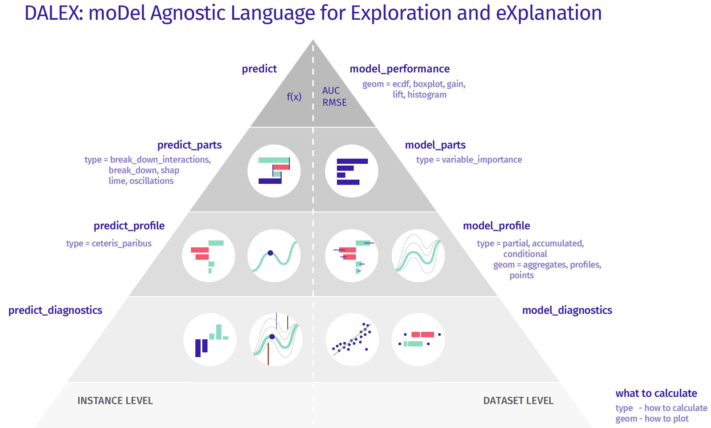
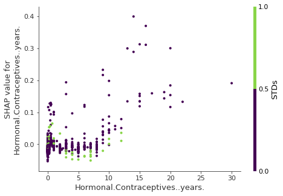
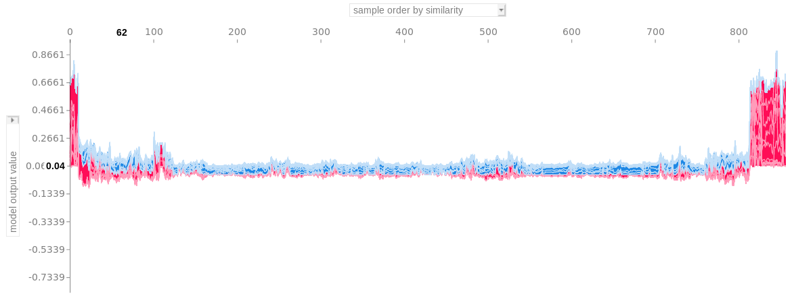
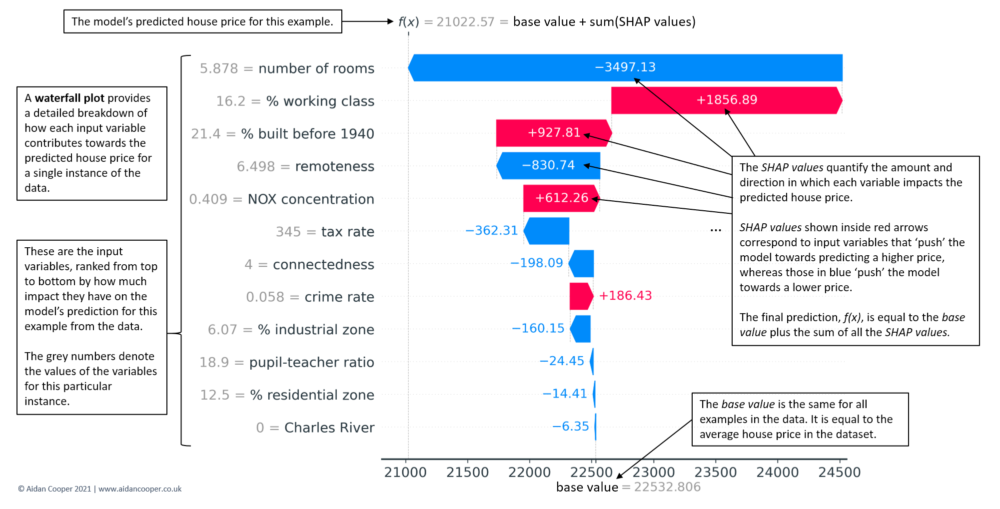
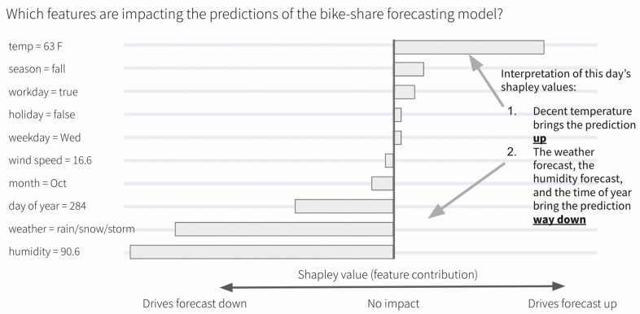
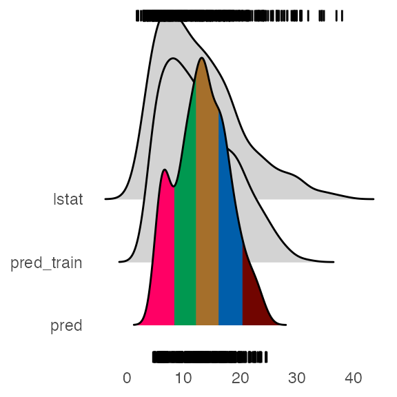
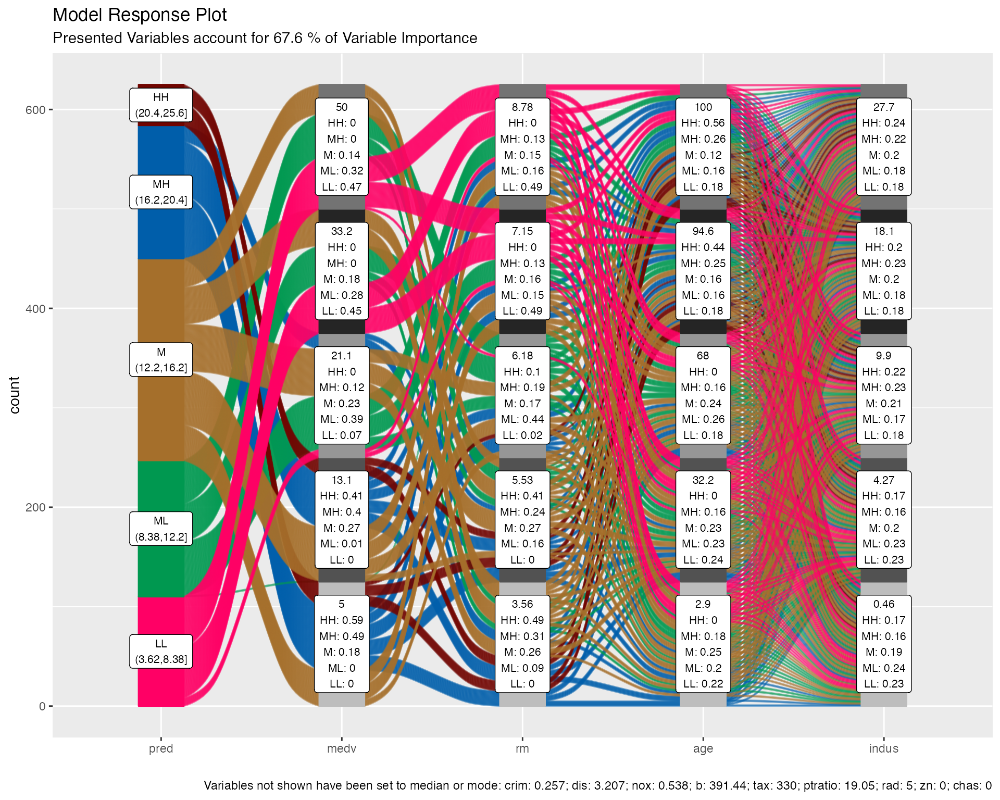
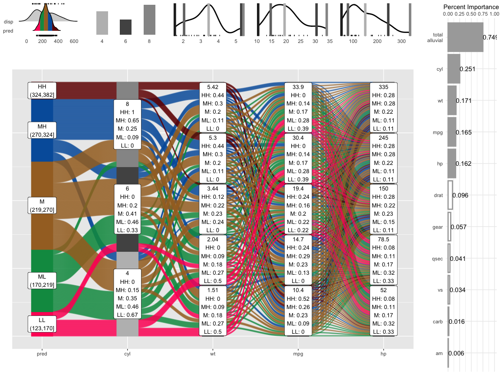

38 Diagnostics, Model Agnostic
Contents
- DALEX
- auditor
- triplot
- SHAP
- IML
- easyalluvial
(pdp PKG has ggplot option)
Notes
- Individual prediction interpretation uses:
- Look at extreme prediction values and see what predictor variable values are driving those predictions
- Examine distribution of prediction values (on observed or new data)
- multi-modal? Which variables are driving the different mode’s predicitions
- Break predictions down by cat variable. If differences between levels are apparent, which predictor variable values are driving those differences in predictions
- ML model predicts customer in observed data has high probability of conversion yet customer hasn’t converted. Develop strategy around predictor variables (increase or decrease, do or stop doing something) that contributed to that prediction to hopefully nudge that customer into converting
 Instance Level
- The model exploration for an individual instance starts with a single number — a prediction. This is the top level of the pyramid.
- To this prediction we want to assign particular variables, to understand which are important and how strongly they influence this particular prediction. One can use methods as SHAP, LIME, Break Down, Break Down with interactions. This is the second from the top level of the pyramid.
- Moving down, the next level is related to the sensitivity of the model to change of one or more variables’ values. Ceteris Paribus profiles allow to explore the conditional behaviour of the model.
- Going further, we can investigate how good is the local fit of the model. It may happen, that the model is very good on average, but for the selected observation the local fit is very low, errors/residuals are larger than on average. The above pyramid can be further extended, i.e. by adding interactions of variable pairs.
Dataset Level
- The exploration for the whole model starts with an assessment of the quality of the model, either with F1, MSE, AUC or LIFT/ROC curves. Such information tells us how good the model is in general.
- The next level helps to understand which variables are important and which ones make the model work or not. A common technique is permutation importance of variables.
- Moving down, methods on the next level help us to understand what the response profile of the model looks like as a function of certain variables. Here you can use such techniques as Partial Dependence Profiles or Accumulated Local Dependence.
- Going further we have more and more detailed analysis related to the diagnosis of the errors/residuals.
DALEX (old) ebook notes - pkg for model interpretation, new ebook explanatory model analysis https://pbiecek.github.io/ema/
If values/relationships for vars in plots are common among models, we can have a decent amount of trust that these are consistent indicators. If models differ, domain experts should be consulted in order to determine which model is capturing the correct logic.
Sect 3.1 residual plots - model_performance, (line) plot (shows resid distribution), (boxplot) plot(, geom = “boxplot”). Smaller distr = better overall mod usually. Quantiles relate to size of resid. Largest residuals (largest errors) near 1 and smallest near zero. Y axis is percent of the total residuals. Red dot represents rmse (aka resid std dev) which I’m not sure what its location is supposed to say about the model.
Sect 3.2 Variable Importance
- Takes a variable, randomizes its rows, measures change in loss function from full model.
- Vars that have largest changes are of greater importance (longer bars).
- Baseline is supposed to be worst possible loss. Calculated from randomizing response row values.
- arg n_sample =1000 (default), = -1 to use whole dataset (slower).
- Steps for any given loss function
- Compute loss function for original model
- For variable i in {1,…,p}
- Randomize values
- Apply given ML model
- Estimate loss function
- Compute feature importance (permuted loss / original loss)
- Sort variables by descending feature importance
Sect 3.3 Partial Dependence
- Need to read about accumulated dependency plots in the new dalex ebook
- The PDP curve represents the average prediction across all observations while holding a predictor, x, at a constant value
- keep a new data pt constant and calculate a prediction for each observed value of the other predictors then take the average of the predictions
- Steps for a selected predictor, x:
- Determine grid space of j evenly spaced values across distribution of x
- For value i in {1,…,j} of grid space
- set x == i for all n observations (x is a constant variable)
- apply given ML model
- estimate n predicted values
- calculate the average predicted value
- graph y_hat vs x
numeric preds- variable_response(, type = “pdp”), with highly corr preds, type =“ale”
cat preds - type = “factor”, hierarchically clusters cat levels showing which levels are most similar to each other. Also a boxplot for each level with predictions on x axis , number next to level is the median
If vars ranked in importance differently in different models –> compare in pdp, factor, or ale plots. See if model that has var ranked higher captures a different (eg non-linear) rel with response than another model
Sect 4.1 resid vs obs: model_performance, ggplot(observed, diff)
Also find row index for outlier resids
Sect 4.2 breakdown: Take outlier row, see how pred.vars contribute to pred. Maybe compare bt mods. breakdown obj shows numbers. Baseline is the avg predicted response value (at least it is for shapley force plots) and origin point in plot. Think its there to make graph more readable. Top bar (final prognosis) is predicted value. Rest of bars add up to that value. Doesnt give observed value to show how much pred val is off by.
- see triplot section if model contains highly correlated variables
(Need numeric pred vars and outcome or prob outcome) Sect 5.1 Ceteris Paribus profiles for 1 obs - similar to PDPs in sect 3.3, eg resp vs var line chart, but here resps are calcd instead of using fits from original model. Also like interpreting a regression coefficient except there it’s assumed a linear relationship so one unit increase in var equals
increase in the response. This can show a nonlinear relationship between the variable and the response. ceteris_paribus(), supply single obs with values of your choice, 1 numeric var varies while others held constant and responses calcd. Repeated for other numeric vars. Plot. Can supply a cat var but it’ll just be a constant throughout process.
Sect 5.2 Ceteris Paribus profile for local area around obs. Supply obs, select_neighbors, ceteris_paribus, plot
Neighbors chosen from calcd distance metric using all vars, default is gower distance, whatever that is.
Profile lines: parallel suggests rel bt var and response is additive (linear?). Small distance bt lines suggests model preds are stable for values of that var around the supplied value.
Add residuals to plot: small residuals suggest good fit for values of var in that neighborhood
Add layers: add and bold profile line for supplied value. Add mean neighborhood profile line
Sects 5.3, 5.4 - shows facetted plots for sect 5.2, rug added, only neighborhood mean value cp profile, nbhd mean prof for multiple models, faceted for mult vars and mult models
Sect 5.5 multi-class classification model example. Same but a line for each resp class
Sect 5.6 shows using 4 obs instead of one and coloring by a cat var
Champion-Challenger analysis (DALEXtra PKG)
- Lets us compare two or more Machine-Learning models, determinate which one is better and improve both of them.
- Funnel Plot of performance measures as an innovative approach to measure comparison.
- Automatic HTML report.
Cross langauge comaprison (DALEXtra PKG)
- Creating explainers for models created in different languges so they can be explained using R tools like DrWhy.AI family.
- Currently supported are Python scikit-learn and keras, Java h2o, R xgboost, mlr, mlr3 and tidymodels
triplot - takes into account the correlation structure when assessing variable importance; global and local explanations
- model_triplot (global)
mod_explainer <- DALEX::explain(model_obj, data(without target), dat$target, label = "type of model")
triplot_global <- triplot::model_triplot(mod_explainer, B = num_permutations, N = num_rows_sampled, corr_method)
plot(triplot_global)Currently only correlation methods for numeric features supported
Using small numbers of rows for permutations (N arg) will cause unstable results
left panel
- the global importance of every single feature
- permutation feature importance used
middle panel
- the importance of groups of variables determined by the hierarchical clustering
- importance calc’d by permutation feature importance
- numbers to left of the split point is the group importance
right panel
- correlation structure visualized by hierarchical clustering
- Guess this is the same as the middle panel but a correlation method is used instead of feature importance
Interpretation: Use the middle panel to see if adding correlated features increases group importance.
- Adding too many for little gain in importance may not be worth it, depending on sample size.
- might be useful for deciding whether or not to create a combined feature
Unclear on the technical details on how or what exactly is being clustered.
predict_triplot (local)
- like breakdown or shapley in that it’s goal is to assess the feature contribution to the prediction
- variables can have negative or positive contributions to the prediction value
- combines the approach to explanations used by LIME methods and visual techniques introduced in a global triplot
- like breakdown or shapley in that it’s goal is to assess the feature contribution to the prediction
# slice a row of original dataset that you want an explanation of the model prediction
target_row <- df %<% slice(1)
triplot_local <- triplot::predict_triplot(mod_explainer, target_row, N = num_rows_sampled, corr_method)
plot(triplot_local)- same interpretation as model_triplot but for explaining the prediction of a target observation
- left panel
- the contribution to the prediction of every single feature
- middle panel
- the contribution of aspects, that are built in the order determined by the hierarchical clustering
- right panel
- correlation structure of features visualized by hierarchical clustering
- predict_aspects (local)
- aspects are groups of variables that can be thought of as latent variables
- can use the middle or right panel from predict_triplot to get ideas on how to group your variables
- there’s also a group_variables helper function that can group vars by a correlation cutoff value
- aspects are groups of variables that can be thought of as latent variables
# Example
# group variables
fifa_aspects <- list(
"age" = "age",
"body" = c("height_cm", "weight_kg"),
"attacking" = c("attacking_crossing",
"attacking_finishing",
"attacking_heading_accuracy",
"attacking_short_passing",
"attacking_volleys"))
# Compare aspect importances from different models
pa_rf <- predict_aspects(rf_explainer,
new_observation = target_row,
variable_groups = fifa_aspects)
pa_gbm <- predict_aspects(gbm_explainer,
new_observation = top_player,
variable_groups = fifa_aspects)
plot(pa_rf, pa_gbm)- output is two, side-by-side aspect importance plots
- but they’re more like contribution plots, where aspects can have positive or negative contributions to the predicted value
- Can be used to compare models
- examples
- if one model underpredicts a target observation more than another model, how do the feature contributions to that prediction differ between the two models?
- are there different aspects more important in one model than the other?
- if they’re the same aspects at the top, does one aspect stand out in one model while in the other model the importance values are more evenly spread?
- examples
auditor - pkg for GOF measure, model similarity comparison using residuals. Also, uses residual plots and scores to check for asymmetry (around zero) in the distribution, trends, and heteroskedacity.
Auditor objects only require a predict function and response var in order to be created.
Usually scores use score(auditor_obj, type = “?”, …), plots use plot(auditor_obj, type = “?”, … )
Plot function can facet multiple plots, e.g. plot(mod1, mod2, mod3, type = c(“ModelRanking”, “Prediction”), variable = “Observed response”, smooth = TRUE, split = “model”). smooth = TRUE adds a trend line. Split arg splits prediction vs observed plot into plots for each model.
Regression Error Characteristic (REC) plot- GOF measure - type = “REC” - The y-axis is the percentage of residuals less than a certain tolerance (i.e. size of the residual) with that tolerance on the x-axis. The shape of the curve illustrates the behavior of errors. The quality of the model can be evaluated and compared for different tolerance levels. The stable growth of the accuracy does not indicate any problems with the model. A small increase of accuracy near 0 and the areas where the growth is fast signalize bias of the model predictions (jagged curve).
Area Over the REC Curve (AOC) score - GOF measure - type = “REC” - is a biased estimate of the expected error for a regression model. Provides a measure of the overall performance of regression model. Smaller is better I’d think.
Regression Receiver Operating Characteristic (RROC) plot - type = “RROC” - for regression to show model asymmetry. The RROC is a plot where on the x-axis we depict total over-estimation and on the y-axis total under-estimation.
Area Over the RROC Curve score - GOF measure - type = “RROC” - equivalent to the error variance. Smaller is better I’d think
Model Ranking plot and table - Multi-GOF measure - type = “ModelRanking” - radar plot of potentially five scores: MAE, MSE, RMSE, and the AOC scores for REC and RROC. They’ve been scaled in relation to the model with the best score for that particular metric. Best model for a particular metric will be farthest away from the center of the plot. In the table, larger scaled score is better while lower is better in the plain score column. You can also add a custom score function but you need to make sure that a lower value = best model.
Residuals Boxplot - asymmetry measure - type = “ResidualBoxplot” - Pretty much the same as a regular boxplot except there’s a red dot which stands for the value of Root Mean Square Error (RMSE). Values are the absolute value of the residuals. Best models will have medians around zero and small spreads (i.e. short whiskers). Example in the documentation has a good example showing how a long whisker pulls the RMSE which is sensitive to outliers towards the edge of the box.
Residual Density Plot - asymmetry measure - type = “ResidualDensity” - detects the incorrect behavior of residuals. For linear regressions, residuals should be normally distributed around zero. For other models, non-zero centered residuals can indicate bias. Plot has a rug which makes it possible to ascertain whether there are individual observations or groups of observations with residuals significantly larger than others. Can specify a cat predictor variable and see the shape of the density of residuals w.r.t. the levels of that variable.
Two-sided ECDF Plot - type = “TwoSidedECDF” - stands for Empirical Cumulative Distribution Functions. There’s an cumulative distribution curve for each positive and negative residuals. The plot shows the distribution of residuals divided into groups with positive and negative values. It helps to identify the asymmetry of the residuals. Points represent individual error values, what makes it possible to identify ’outliers’
Residuals vs Fitted and autocorrelation plots - type = “Residual”, type = “Autocorrelation” - same thing as base R plot. Any sort of grouping, trend, or pattern suggests an issue. Looking for randomness around zero. Can specify a cat predictor variable and see the trend of residuals w.r.t. the levels of that variable.
Autocorrelation Function Plot (ACF) - autocorrelation check - type = “ACF” - same evaluation as a ACF plot for time series
Scale-Location Plot - type = “ScaleLocation” - The y-axis is the sqrt(abs(std_resids)) and x-axis is fitted values. Different from Resid vs Fitted since that plot uses raw residuals instead of scaled. Equation shows the resids are divided by their std.dev, so that should fix the variance at 1. The presence of any trend suggests that the variance depends on fitted values, which is against the assumption of homoscedasticity. Not every model has an explicit assumption of homogeneous variance, however, the heteroscedasticity may indicates potential problems with the goodness-of-fit. Residuals formed into separate groups suggest a problem with model structure (specification?)
Peak Test - - type = “Peak” - tests for heteroskedacity. Score’s range is (0, 1]. Close to 1 means heteroskedacity present.
Half-Normal Plot - GOF measure - type = “HalfNormal” - graphical method for comparing two probability distributions by plotting their quantiles against each other. Method takes info from the model and simulates response values. Your model is then fitted with the simulated response variable and residuals created. A dotted line 95% CI envelope is created from these simulated residuals. If your residuals come from the normal distribution, they are close to a straight dotted line. However, even if there is no certain assumption of a specific distribution, points still show a certain trend. Simulated envelopes help to verify the correctness of this trend. For a good-fitted model, diagnostic values should lay within the envelope.
Half-Normal Score - GOF measure - scoreHalfNormal(auditor_obj)
- Count the number of simulated residuals for observation_i that are greater or equal than resid_i. If the number is around 0.5 the number of simulated residuals, m, then the model residual doesn’t differ that much from the simulated residuals which is a good thing.
- That calc is repeated for each residual.
- Score = sum(abs(count_i - (m/2)))
- Score’s range = [0, (nm)/2], where n is the number of observations
- Lower value indicates better model fit.
Model PCA Plot - Similarity of models comparison - type = “ModelPCA” - vector arrows represent the models and the gray dots are the model residuals. The smaller the angle between the models, the closer their residual structure. Arrows perpendicular the residual dots mean that model’s residuals likely represent that structure. Parallel means not likely to represent that structure.
Model Correlation Plot - Similarity of models comparison - type = “ModelCorrelation” - Densities in the diagonal are each models fitted response values. Correlations in upper right triangle are between models and between each model and the observed response.
Predicted Response Plot (aka predicted vs observed) - GOF measure - type = “Prediction” - Should randomly envelop the diagonal line. Trends can indicate values of the response where the model over/under predicts. Groupings of residuals suggest problems in model specification.
Receiver Operating Characteristic (ROC) curve - classification GOF measure - type = “ROC” - True Positive Rate (TPR) (y-axis) vs False Positive Rate (FPR) (x-axis) on a threshold t (probability required to classify something as an event happening) where t has the range, [0,1]. Each point on the ROC curve represents values of TPR and FPR at different thresholds. The closer the curve is to the the left border and top border of plot, the more accurate the classifier is.
AUC score - GOF measure - type = “ROC” - guideline is > 0.80 is good.
LIFT charts - classification GOF measure - type = “LIFT” - Rate of Positive Prediction (RPP) plotted (y-axis) vs number of True Positives (TP) (x-axis) on a threshold t. where P is the total positive classifications (TP + FP) predicted for that threshold and N is the total negative (TN + FN). The ideal model is represented with a orange/yellow curve. The model closer to the ideal curve is considered the better classifier.
Cook’s Distances Plot - influential observations - type = “CooksDistance” - a tool for identifying observations that may negatively affect the model. They can be also used for indicating regions of the design space where it would be good to obtain more observations. Data points indicated by Cook’s distances are worth checking for validity. Cook’s Distances are calculated by removing the i-th observation from the data and recalculating the model. It shows an influence of i-th observation on the model. The 3 observations (default value) with the highest values of the Cook’s distance are marked with the row number of the observation. The guideline seems to be a Cook’s Distance (y-axis) > 0.5 warrants further investigation.
SHAP
- Description
- Decomposes predictions into additive contributions of the features
- Builds model explanations by asking the same question for every prediction and feature: “How does prediction i change when feature j is removed from the model?”
- Quantifies the magnitude and direction (positive or negative) of a feature’s effect on a prediction.
- Theoretical foundation in game theory
- Issues
- Cannot be used for causal inference
- Highly correlated features
- May be indictators for a latent feature.
- These correlated features will have lower shap values than they would if only 1 were in the feature space.
- Since shap values are additive, we can add the shap values of highly correlated variables to get an estimate of the importance of this potential latent feature. (seems like the sum might be an overestimation unless the variables are Very highly correlated.)
- **See triplot section for handling models with highly correlated features
- Packages
- {shapper} - a wrapper for the Python library
- {fastshap} - uses Monte-Carlo sampling
- {treeshap}
- fast
- Handles correlated features by explicitly modeling the conditional expected prediction
- Disadvantage of this method is that features that have no influence on the prediction can get a TreeSHAP value different from zero
- able to compute interaction values
- Computing “residuals” might indicate how well shapley is capturing the contributions if the features are independent (py article)
- {kernelshap}
- permute feature values and make predictions on those permutations. Once we have enough permutations, the Shapley values are estimated using linear regression
- Slow
- Doesn’t handle feature correlation. Leads to putting too much weight on unlikely data points.
- Articles
- Explaining Machine Learning Models: A Non-Technical Guide to Interpreting SHAP Analyses
- Ultimate explainer
- Interpretable Machine Learning (ebook)
- math, compares packages
- Explaining Machine Learning Models: A Non-Technical Guide to Interpreting SHAP Analyses
- Steps for the approximate Shapley estimation method (used in IML package below):
- Choose single observation of interest
- For variables j in {1,…,p}
- m = random sample from data set
- t = rbind(m, ob)
- f(all) = compute predictions for t
- f(!j) = compute predictions for t with feature j values randomized
- diff = sum(f(all) - f(!j))
- phi = mean(diff)
- sort phi in decreasing order
- Interactions
- SHAP values for two-feature interactions
- Resource
- Example: Years on hormonal contraceptives (continuous) interacts with STDs (binary)
- Interpretation
- In cases close to 0 years, the occurence of a STD increases the predicted cancer risk.
- For more years on contraceptives, the occurence of a STD reduces the predicted risk.
- NOT a causal model. Effects might be due to confounding (e.g. STDs and lower cancer risk could be correlated with more doctor visits).
- Cluster by shap value
- See ebook chapter for more details
- Plot is all the force plots ordered by similarity score
- I think the “similarity score” might come from the cluster model (i.e. a distance measure from from a hierarchical cluster)
- Interpretation: group of force plots on the far right shows that the features similarily contributed to that group of predictions
- Waterfall plots
- An example waterfall plot for the individual case in the Boston Housing Price dataset that corresponds to the median predicted house
- Interpretation example
- force plot - Examines influences behind one predicted value that you input to the function.

- Red arrows represent feature effects (SHAP values) that drives the prediction value higher while blue arrows are those effects that drive the prediction value lower.
- Each arrow’s size represents the magnitude of the corresponding feature’s effect.
- The “base value” (see the grey print towards the upper-left of the image) marks the model’s average prediction over the training set. The “output value” is the model’s prediction.
- The feature values for the largest effects are printed at the bottom of the plot.
- decision plot - Examines influences behind one predicted value that you input to the function. Pretty much the same exact thing as the breakdown plot in DALEX.
- The straight vertical line marks the model’s base value. The colored line is the prediction.
- Starting at the bottom of the plot, the prediction line shows how the SHAP values (i.e., the feature effects) accumulate from the base value to arrive at the model’s predicted output at the top of the plot.
- The feature name on the y-axis is bordered by 2 horzontal grid lines. In the graph, the way the prediction line behaves in between these horizontal grid lines of the feature visualizes the SHAP value, e.g. a negative slope would be equal to the blue arrow in the force plot.
- The feature values for the largest effects are in parentheses.
- For multi-variate classification
- Using lines instead of bars (like in breakdown plots) allows it to visualize the influences behind a multi-class outcome prediction where each line is for a category level probability. But the x-axis actually represents the raw (SHAP?) score, not a probability. (I think there’s an option for x-axis as probabilities)
- The magnitude of score shows strength of confidence in the prediction. A negative score says the model thinks that category level is not the case. For example, if the category level is “no disease”, then a large negative score means the model says there’s strong evidence that disease is present (score was -2.12 so I guess that’s strong).
- Can vary one predictor between a range or set of specific values and keep the rest of predictors constant. For classification, you could ask which predictors dominate influence for high probability predictions? Then use the plot to compare predictor behavior.
- Can compare how influences are different for an observation by multiple models.
IML Uses ggplot, so layers and customizations can be added. Package also has pdp, feature importance, lime, and shapley. Note from https://www.brodrigues.co/blog/2020-03-10-exp_tidymodels/, Bruno wrapped his predict function when he created a IML Predictor object. Also see article if working with workflow and cat vars, he an issue and workaround.
predict_wrapper2 <- function(model, newdata){
predict(object = model, new_data = newdata)
}
predictor2 <- Predictor$new(
model = best_model_fit,
data = pra_test_bake_features,
y = target,
predict.fun = predict_wrapper2
)- Acumulated Local Effect (ALE) - shows how the prediction changes locally, when the feature is varied
- aka Partial Dependence Plot
- Chart has a distribution rug which shows how relevant a region is for interpretation (little or no points mean that we should not over-interpret this region)
- Individual Conditional Expectation (ICE)
- These are curves for a chosen feature that illustrate the predicted value for each observation when we force each observation to take on the unique values of that feature.
- Steps for a selected predictor, x:
- Determine grid space of j evenly spaced values across distribution of x
- For value i in {1,…,j} of grid space
- set x == i for all n observations (x is a constant variable)
- apply given ML model
- estimate n predicted values
- The only thing that’s different here from pdp is that the predicted values, y_hats, for a particular x value aren’t averaged in order to produce a smooth line across all the x values. It allows us to see the distribution of predicted values for each value of x.
- For a categorical predictor: each category has boxplot and the boxplots are connected at their medians
- For a numerical predictor: Its a multi-line graph with each line representing row in the training set.
- The pdp line is added and highlighted with arg, method = “pdp+ice”.
- Interaction PDP
- Visualizes the pdp for an interaction. Shows the how the effect of a predictor on the outcome varies when conditioned on another variable.
- Example:
- outcome (binary) = probability of getting overtime
- predictor (numeric) = monthly_income
- interaction_variable (character) = gender
- pdp shows a multi-line chart with a distinct gap between male and female
- Example:
- Can be used in conjunction using the H-statistic below to find a strong interaction to examine with this plot
- Visualizes the pdp for an interaction. Shows the how the effect of a predictor on the outcome varies when conditioned on another variable.
- H-statistic
- Measures how much of the variation of the predicted outcome depends on the interaction of the features.
- Two approaches:
- Sort of an overall measure of a variable’s interaction strength
- Steps:
- for variable i in {1,…,m}
- f(x) = estimate predicted values with original model
- Think this is a y ~ i model only
- pd(x) = partial dependence of variable i
- pd(!x) = partial dependence of all features excluding i
- Guessing each non-i variable gets it’s own pd(!x)
- upper = sum(f(x) - pd(x) - pd(!x))
- lower = variance(f(x))
- ρ = upper / lower
- f(x) = estimate predicted values with original model
- Sort variables by descending ρ (interaction strength)
- for variable i in {1,…,m}
- ρ = 0 means none of variation in the predictions is dependent on the interactions involving the predictor
- ρ = 1 means all of the variation in the predictions is dependent on the interactions involving the predictor
- Steps:
- Measures the 2-way interaction strength of feature
- Breaks down the overall measure into strength measures between a variable and all the other variables
- Top variables in the first approach or variables of domain interest are usually chosen to be further examined with this method. This method will show if there are strong co-dependency relationships in the model
- steps:
- i = a selected variable of interest
- for remaining variables j in {1,…,p}
- pd(ij) = interaction partial dependence of variables i and j
- pd(i) = partial dependence of variable i
- pd(j) = partial dependence of variable j
- upper = sum(pd(ij) - pd(i) - pd(j))
- lower = variance(pd(ij))
- ρ = upper / lower
- Sort interaction relationship by descending ρ (interaction strength)
- Sort of an overall measure of a variable’s interaction strength
- Computationally intensive as feature set grows
- 30 predictors for 3 different models = a few minutes
- 80 predictors for 3 different models = around an hour
- Surrogate model
- Steps:
- Apply original model and get predictions
- Choose an interpretable “white box” model (linear model, decision tree)
- Train the interpretable model on the original dataset with the predictions of the black box model as the outcome variable
- Measure how well the surrogate model replicates the prediction of the black box model
- Interpret / visualize the surrogate model
- Steps:
- Feature Importance
- the ratio of the model error after permutation to the original model error
- You can specify the loss function
- “rmse” “mse” “mae”
- Anything 1 or less is interpreted as not important
- Has error bars
- You can specify the loss function
- Can also used difference instead of ratio
- the ratio of the model error after permutation to the original model error
easyalluvial
- pdp plots using alluvial flows to display more than 2 dimensions at a time
- helps to get an intuitive understanding how predictions of a certain ranges can be generated by the model
- Constricted alluvial paths indicate specific (or maybe a small range) predictor variable values are responsible for a certain range of outcome variable values
- Spread-out alluvial paths indicate the value of the predictor probably isn’t that important in determining that range of values of the outcome variable
- There are built-in functions for caret and parsnip models, but there are methods that allow you to use any model
- packages
- {easyalluvial}
- {parcats} - converts easyalluvial charts into interactive htmlwidget
- tooltip also shows probability and counts
- Steps
- Build model
- Calculate pdp prediction values -
p = alluvial_model_response_parsnip(m, df, degree = 4, method = "pdp")- arguments
- m = model
- df = data
- degree = number of top importance variables to use
- method =
- “median” is default which sets variables that are not displayed to median mode, use with regular predictions.
- “pdp” uses pdp method
- bins = number of flows for numeric predictors (not intervals, so not sure why they used “bins”)
- params_bin_numeric_pred = list, Default: list(bins = 5, center = T, transform = T, scale = T)
- “pred” = predictions so these are binned predictions of the outcome variable
- transform = apply Yeo Johnson Transformation to predictions
- These are params to another function, and I think you can adjust the binning function there.
- bin_labels: labels for the bins from low to high, Default: c(“LL”, “ML”, “M”, “MH”, “HH”)
- High, High (HH)
- Medium, High (MH)
- Medium (M)
- Medium, Low (ML)
- Low, Low (LL)
- For numerics, 5 values (bins arg) in the range of each predictor is chosen
- These aren’t IQR values or evenly spaced so not sure what the process is
- For categoricals, I guess each level is used. Not sure how a cat var with many levels is treated.
- predictions are calculated using the method in the method arg
- predictions are transformed and binned into 5 range intervals (params_bin_numeric_pred arg)
- arguments
- Plot
p(just have to call the above function)- can also add importance and marginal histograms
p_grid <- p %>%
add_marginal_histograms(data_input = df, plot = FALSE) %>%
add_imp_plot(p = p, data_input = df)- Extreme values
- Check if extreme values of the sample distribution are covered by the alluvial
pred_train = predict(m)
plot_hist('pred', p, df,
pred_train = pred_train, # pred_train can also be passed to add_marginal_histograms()
scale = 50)Distributions
- lstat is the sample distribution for the outcome variable
- pred_train is the model predictions of sample data
- pred is the predictions by the alluvial method using top importance variables
Most of the extreme values are covered by the model predictions (pred_train), but the not the alluvial method.
If you want an alluvial with preds for the extreme values, see What feature combinations are needed to obtain predictions in the lower and higher ranges in the docs.
Example - mlbench::BostonHousing; lstat(outcome var) percentage of lower status of the population; rf parsnip model

predictor variable labels:
- top number: value of the variable used in predictions
- rest: fraction of the flows of that color (predictions bin range) pass through that stratum
- e.g. 49% of the medium-high lstat predictions involve medv = 5
method = “median”, note bottom where it shows that predictions are calculated using the median/mode values of variable
Example: mtcars; disp (outcome var)

- histograms/density charts
- “predictions”: density shows the shape of the predictions distribution and sample distribtution; areas for HH, MH, M, ML, LL
- predictors: shows sample density/histogram and location of the variable values used in the pdp predictions
- percent importance: variable importance for the model; “total_alluvial” is the total importance of the predictor variables used in the pdp alluvial.
- When comparing the distribution of the predictions against the original distribution of disp we see that the range of the predictions in response to the artificial dataspace do not cover all of the range of disp. Which most likely means that all possible combinations of the 4 plotted variables in combination with moderate values for all other predictors will not give any extreme values